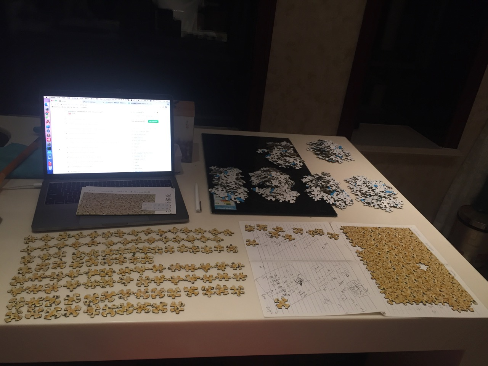
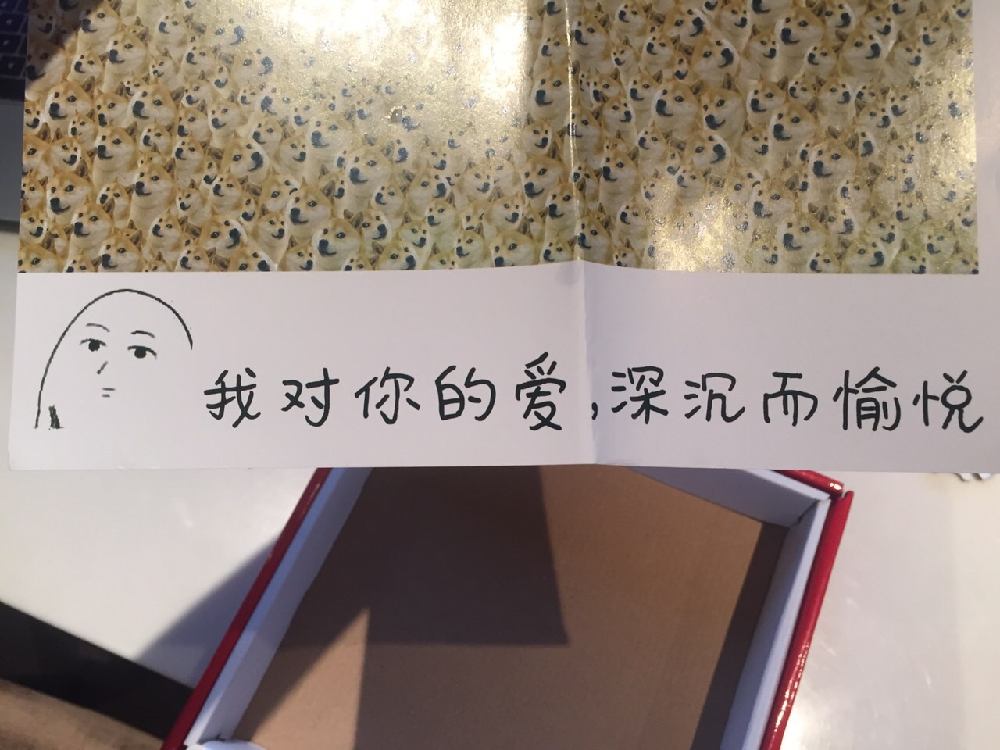
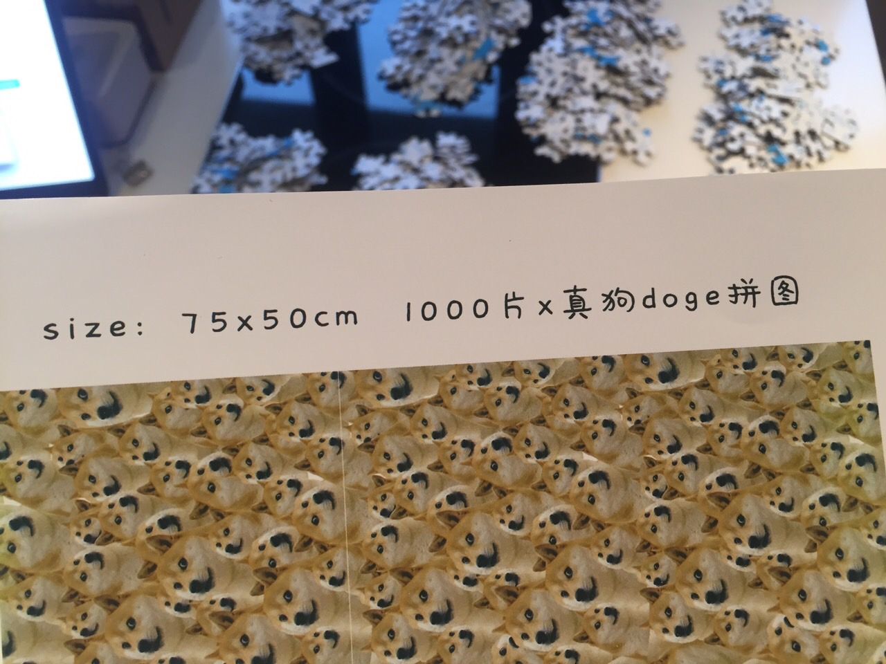
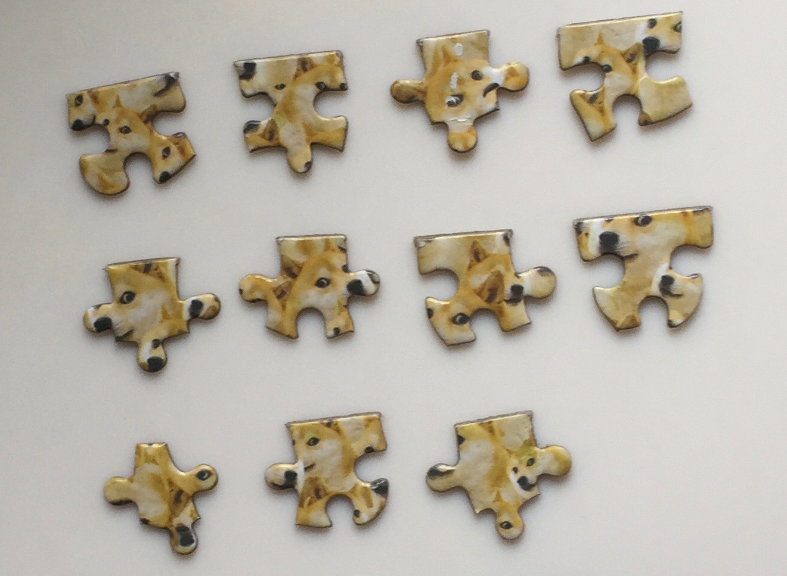
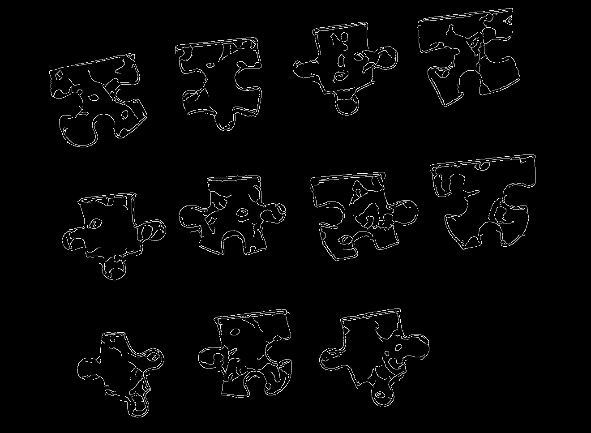

OpenCV 提取拼图轮廓
Jun 8, 2017
六二节收到一份拼图礼物，1000片真狗·doge拼图，我有一句话不知当讲不当讲：
～！@#¥%……&*（）

我的内心仿佛有1000只doge正在微笑
但是，由于送礼的人比较特殊，这拼图不拼完好像不行：）


花了一天时间才完成了1/4。。。边拼边想，要是能用图像处理帮我完成就好了。虽然毫无经验，但是拿来入门，尝试一下也是好的，反正很闲嘛（手动滑稽）
尝试
opencv提供了很多很多现成方法，但是怎么排列组合，参数调到多少比较合适，这些一时半会儿也学不会。大致按照滤波、增强、检测几个步骤，反复试参数得到了比较明显的轮廓：
原图：

轮廓：

代码：
1 | #!/usr/bin/env python |
反复调整canny等参数的阈值，我得到的要么是由多个片段组成的完整轮廓，要么是单个片段的残缺的轮廓，这样的数据暂时好像没什么用处。
参考资料
Mac上安装python-opencv
MoreWindows Blog - OpenCV入门指南
python openCV图像处理之提取轮廓
Opencv图像增强算法实现(直方图均衡化、Laplace、Log、Gamma)
OpenCV边缘检测的详细参数调节